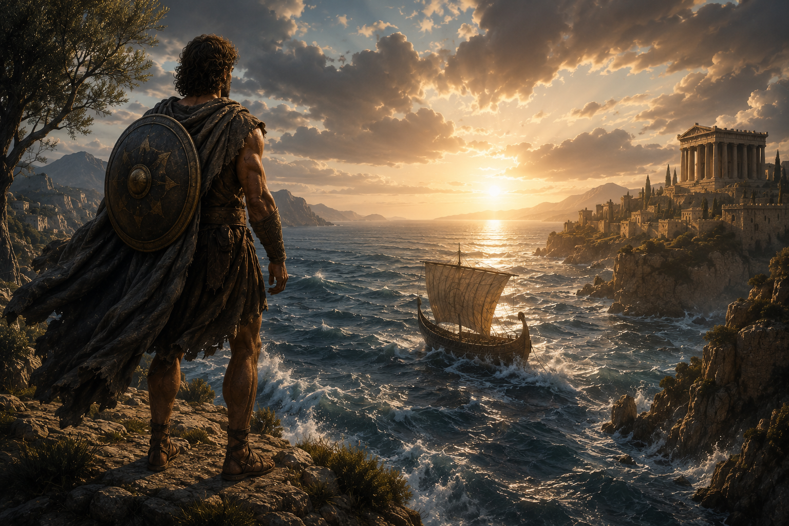

Dünya edebiyatı tarihinde bazı eserler vardır ki yalnızca yazıldıkları dönemi değil, kendilerinden sonra gelen bütün medeniyetleri etkiler. Homeros'un Odysseia destanı da bunlardan biridir. Yaklaşık üç bin yıldır okunmaya devam eden bu eser, yalnızca Antik Yunan mitolojisinin en önemli anlatılarından biri değildir. Aynı zamanda insanın eve dönüş arzusunu, kimliğini koruma mücadelesini, aklın gücünü ve zaman karşısındaki direncini anlatan evrensel bir hikâyedir. Bu yüzden Odysseia, yalnızca klasik edebiyatın değil, dünya kültür tarihinin de temel taşlarından biri kabul edilir.
Günümüzde birçok kişi Odysseia denildiğinde aklına yalnızca Kiklop Polyphemos, Sirenler ya da Truva Atı'nın mimarı olan Odysseus gelir. Oysa destan bunların çok ötesindedir. Homeros'un amacı yalnızca ilginç yaratıklar ve fantastik maceralar anlatmak değildir. Odysseia, savaşın sona ermesinden sonra bile insanın gerçek mücadelesinin devam ettiğini gösteren bir eserdir. Truva önlerinde kazanılan zafer, Odysseus için hikâyenin sonu değil, asıl sınavın başlangıcıdır.
Bu yönüyle Odysseia, kahramanlık anlayışını da değiştirir. Antik destanlarda kahramanlar çoğu zaman düşmanlarını yenerek yücelirken, Homeros burada bambaşka bir yol izler. Akhilleus gücüyle, Herakles dayanıklılığıyla öne çıkarken Odysseus, aklı, stratejisi, ikna yeteneği ve tükenmeyen sabrıyla farklı bir kahramanlık anlayışını temsil eder. Odysseus'un en büyük başarısı bir şehri ele geçirmek ya da güçlü bir savaşçıyı öldürmek değildir. Onun gerçek başarısı, sayısız kayıp ve felaket yaşamasına rağmen kim olduğunu unutmadan yoluna devam edebilmesidir. Bu nedenle Odysseia yalnızca bir deniz yolculuğunu değil, insan karakterinin olgunlaşmasını anlatan büyük bir edebiyat eseridir.
Eser aynı zamanda Batı anlatı geleneğinin temelini oluşturan birçok kavramın ilk büyük örneklerinden biridir. Eve dönüş (nostos), misafirperverlik (xenia), pratik zekâ (metis), kader, sadakat, baştan çıkarılma, sabır ve kimlik gibi temalar yalnızca Antik Yunan edebiyatını değil; Dante'den James Joyce'a, Shakespeare'den Kazancakis'e kadar sayısız yazarı etkilemiştir. Bugün modern romanlarda, sinemada ve psikolojik çözümlemelerde bile hâlâ Odysseia'nın izlerine rastlanmasının nedeni budur.
Ancak destanı gerçekten anlamak için onu yalnızca fantastik olayların peş peşe sıralandığı bir macera kitabı gibi okumamak gerekir. Homeros'un anlattığı her ada, her yaratık ve her sınav belirli bir düşünceyi temsil eder. Polyphemos yalnızca tek gözlü bir dev değildir; ölçüsüz gururun sonuçlarını gösterir. Sirenler yalnızca büyülü sesleriyle insanları kandıran yaratıklar değildir; insanın bitmeyen bilgi arzusunun sembolüdür. Kalypso yalnızca âşık bir tanrıça değildir; ölümsüzlük ile insan olmanın anlamı arasındaki büyük soruyu temsil eder. Bu nedenle Odysseia, yüzeyde bir macera destanı gibi görünse de derin yapısında insanın kendisini bulma hikâyesidir.
Bu makalede Odysseia destanının ne olduğunu, Homeros tarafından nasıl kurgulandığını, kaç kitaptan oluştuğunu, olay örgüsünü, karakterlerini, sembollerini, tarihsel arka planını, sanat tarihine etkisini ve neden yaklaşık üç bin yıldır dünyanın en önemli edebî eserlerinden biri kabul edildiğini ayrıntılı biçimde inceleyeceğiz. Çünkü Odysseia, yalnızca Odysseus'un İthaka'ya dönüşünü anlatan bir destan değil; insanın ait olduğu yere ulaşabilmek için verdiği en uzun ve en anlamlı yolculuğun hikâyesidir.
Odysseia Destanı Nedir?
Odysseia, Antik Yunan şairi Homeros'a atfedilen iki büyük destandan biridir. Diğeri olan İlyada, Truva Savaşı'nın son dönemindeki olayları ve özellikle Akhilleus'un öfkesini anlatırken, Odysseia savaşın ardından İthaka Kralı Odysseus'un evine dönebilmek için verdiği on yıllık mücadeleyi konu edinir. Bu iki eser birbirini tamamlayan anlatılar olarak görülse de aslında farklı temalara odaklanırlar. İlyada savaşın destanıdır; Odysseia ise savaş sonrasında hayatta kalmanın ve yeniden insan olabilmenin destanıdır.
Araştırmacıların büyük çoğunluğu, Odysseia'nın MÖ 8. yüzyılın sonlarında yazıya geçirildiği görüşündedir. Bununla birlikte eserin kökeni çok daha eskidir. Homeros'un yaşadığı kabul edilen dönemden önce de bu hikâyeler kuşaklar boyunca sözlü gelenek içinde aktarılmıştır. Antik Yunan'da gezgin ozanlar, yani aoidoslar, kahramanlık öykülerini ezbere söyleyerek nesilden nesile taşımışlardır. Bu nedenle Odysseia, tek bir anda yazılmış bir eser değil; uzun bir kültürel hafızanın edebî biçime kavuşmuş hâlidir.
Destan yirmi dört kitaptan oluşur. Bu yapı daha sonraki Helenistik dönemde düzenlenmiş olsa da günümüzde kullanılan standart bölümleme budur. İlginç olan nokta ise Homeros'un anlatıyı kronolojik sırayla kurmamasıdır. Modern romanlarda ve sinemada sıkça kullanılan geriye dönüş tekniğinin en eski ve en başarılı örneklerinden biri Odysseia'da görülür. Destan, Odysseus'un Troya'dan ayrıldığı anla başlamaz. Okuyucu hikâyeye katıldığında kahraman zaten yıllardır denizlerde kaybolmuştur. Onun başından geçen olayların önemli bir kısmını ise daha sonra, Odysseus'un kendi ağzından dinleriz. Bu anlatım tekniği, karakteri ve yaşadıklarını çok daha güçlü biçimde tanımamızı sağlar.
Odysseia'yı diğer kahramanlık destanlarından ayıran en önemli özelliklerden biri de merkezine savaş meydanını değil, eve dönüşü yerleştirmesidir. Antik Yunan kültüründe bu düşünce nostos kavramıyla ifade edilir. Nostos yalnızca fiziksel olarak memlekete ulaşmak anlamına gelmez; insanın ailesine, kimliğine, geçmişine ve ait olduğu dünyaya yeniden kavuşmasını ifade eder. Odysseus'un bütün yolculuğu da aslında bu kavram etrafında şekillenir. Çünkü onun amacı yeni ülkeler fethetmek ya da daha büyük bir kahraman olmak değildir. Tek isteği, Penelope'ye, Telemakhos'a ve İthaka'ya geri dönebilmektir.
Tam da bu nedenle birçok klasik filolog, Odysseia'yı yalnızca bir macera destanı olarak değil, Batı edebiyatının ilk büyük "eve dönüş romanı" olarak değerlendirir. İnsanlık tarihi boyunca milyonlarca insan savaşlar, göçler ve felaketler nedeniyle yuvasından uzak kalmıştır. Odysseus'un hikâyesi, bu ortak duygunun en eski ve en güçlü anlatılarından biri olduğu için bugün bile okurlar üzerinde etkisini sürdürmektedir.
Homeros Odysseia'yı Neden Yazdı?
Odysseia yalnızca uzun bir deniz yolculuğunu anlatan destan değildir. Homeros'un amacı, okuyucuyu birbirinden ilginç yaratıklarla dolu fantastik bir dünyanın içine çekmekten çok daha büyüktür. Destan dikkatle okunduğunda görülen ilk şey, anlatının merkezinde aslında canavarların değil, insanın bulunduğudur. Polyphemos, Sirenler, Skylla, Kharybdis ya da Kalypso, hikâyenin asıl kahramanları değildir; onlar Odysseus'un karakterini ortaya çıkaran sınavlardır. Bu nedenle Odysseia, dışarıdan bakıldığında bir macera destanı gibi görünse de derin yapısında insanın kendisini tanıma sürecini anlatır.
Homeros'un yaşadığı düşünülen MÖ 8. yüzyıl, Yunan dünyasının siyasi ve toplumsal açıdan yeniden şekillendiği bir dönemdi. Yüzyıllar önce çöken Miken uygarlığının ardından yeni şehir devletleri ortaya çıkıyor, deniz ticareti yeniden canlanıyor ve Akdeniz'de uzun yolculuklar günlük hayatın önemli bir parçası hâline geliyordu. Böyle bir dünyada deniz yalnızca coğrafi bir unsur değildi. Bilinmeyenin, tehlikenin, keşfin ve değişimin simgesiydi. Homeros da Odysseus'un yolculuğunu bu kültürel arka plan üzerine kurarak aslında insanın bilinmeyen karşısındaki mücadelesini anlatıyordu.
Bu nedenle Odysseia'da karşılaşılan her ada, her liman ve her yaratık belirli bir düşünceyi temsil eder. Polyphemos, toplum kurallarını reddeden ilkel gücü simgelerken; Kirke insanın kendi kimliğini kaybetme tehlikesini temsil eder. Sirenler, sınır tanımayan bilgi arzusunu ve bunun doğurabileceği felaketleri; Kalypso ise insanın ölümsüzlük isteğini sorgular. Homeros'un ustalığı tam da burada ortaya çıkar. Hiçbir karakter yalnızca olay örgüsünü ilerletmek için var değildir. Hepsi insan doğasının farklı bir yönünü görünür kılar.
Destanın temelinde yer alan en önemli kavram ise nostos, yani eve dönüştür. Ancak bu dönüş yalnızca İthaka'ya ulaşmak değildir. Homeros'a göre insan uzun yolculuklar boyunca yalnızca bulunduğu yerden uzaklaşmaz; zamanla kendisinden de uzaklaşabilir. Odysseus'un gerçek başarısı, bütün yaşadıklarına rağmen kim olduğunu unutmamasıdır. Bu nedenle eve dönüş, aynı zamanda insanın kendi özüne dönüşüdür.
Bir başka önemli tema ise xenia, yani kutsal misafirperverlik geleneğidir. Antik Yunan toplumunda yabancıya nasıl davranıldığı, kişinin ahlaki değerlerinin en önemli göstergelerinden biri kabul edilirdi. Zeus'un "Zeus Xenios" sıfatıyla misafirlerin koruyucusu sayılması da bunun sonucudur. Odysseia boyunca iyi toplumlarla barbar toplumlar arasındaki fark çoğu zaman savaş meydanında değil, yabancılara nasıl davrandıkları üzerinden gösterilir. Phaiaklar Odysseus'u hiçbir karşılık beklemeden ağırlarken, Polyphemos misafirlerini yiyerek bu kutsal düzeni tamamen yok sayar. Böylece Homeros, medeniyet kavramını askerî güçten çok ahlaki davranışlarla ilişkilendirir.
Destanın belki de en dikkat çekici yönlerinden biri, kahramanlığın yeniden tanımlanmasıdır. İlyada'da kahramanlık çoğu zaman savaş meydanındaki cesaretle ölçülür. Odysseia'da ise durum farklıdır. Burada sabredebilmek, doğru zamanı beklemek, öfkesini kontrol edebilmek, gerektiğinde kimliğini gizlemek ve savaşmadan çözüm üretebilmek de kahramanlığın parçasıdır. Bu bakımdan Odysseus, Antik Yunan dünyasının değişen değerlerini temsil eden yeni bir kahraman tipidir. Onun başarısı yalnızca güçlü olmasından değil, değişen koşullara uyum sağlayabilmesinden kaynaklanır.
Odysseia Destanının Konusu Nedir?
Odysseia'nın merkezinde tek bir soru vardır: Bir insan, her şeyini kaybettikten sonra yeniden evine dönebilir mi? Homeros bu soruya basit bir yolculuk hikâyesiyle cevap vermez. Destanın bütün yapısını, birbirini tamamlayan üç ayrı anlatı üzerine kurar. Bunlardan ilki İthaka'da yaşananlardır. İkincisi Odysseus'un denizlerde sürdürdüğü uzun yolculuktur. Üçüncüsü ise bütün bu olayların sonunda bozulan düzenin yeniden kurulmasıdır. Bu üç anlatı birleşerek yalnızca bir kahramanın değil, bir ailenin, bir krallığın ve bir kimliğin yeniden inşa edilmesini anlatır.
Destan başladığında Odysseus hâlâ evine dönememiştir. Truva Savaşı'nın sona erişinin üzerinden on yıl geçmiş olmasına rağmen İthaka'da ondan haber alınamamaktadır. Sarayda ise bambaşka bir mücadele yaşanmaktadır. Penelope'nin Odysseus'un öldüğüne inanmasını isteyen çok sayıda soylu, onunla evlenerek krallığı ele geçirmeye çalışmaktadır. Penelope ise zekâsı sayesinde bu baskıya yıllarca direnir. Gündüz dokuduğu kefeni gece gizlice sökerek evlilik kararını sürekli erteler. Bu ayrıntı yalnızca sadakati değil, Penelope'nin de Odysseus kadar stratejik düşünebildiğini gösterir. Homeros böylece destanın ilk sayfalarından itibaren yalnızca kahramanını değil, onun yokluğunda ayakta kalmaya çalışan ailesini de anlatmaya başlar.
Bu sırada genç Telemakhos da kendi yolculuğuna çıkar. Babasını neredeyse hiç tanımadan büyüyen Telemakhos, onun yaşayıp yaşamadığını öğrenebilmek için Pylos ve Sparta'ya gider. Günümüz araştırmacıları bu bölümü çoğu zaman "Telemakhia" olarak adlandırır. Çünkü burada anlatılan yalnızca haber arayan bir oğul değildir. Aynı zamanda çocukluktan yetişkinliğe geçen genç bir hükümdarın gelişimidir. Odysseus denizlerde olgunlaşırken, Telemakhos da İthaka'da babasının yokluğunda büyümektedir.
Odysseus'un kendi hikâyesi ise destanın ilerleyen bölümlerinde onun ağzından anlatılır. Phaiaklar ülkesine ulaştığında başından geçen bütün olayları geriye dönerek aktarır. Bu anlatım tekniği, Odysseia'nın en dikkat çekici edebî özelliklerinden biridir. Okuyucu olayları doğrudan yaşamaz; onları kahramanın hafızasından dinler. Böylece yalnızca ne yaşandığını değil, Odysseus'un yaşadıklarını nasıl hatırladığını da öğrenir.
Bu yolculuk boyunca karşılaşılan her durak, yalnızca yeni bir macera değildir. Kiklop Polyphemos kaba gücün akıl karşısındaki yenilgisini gösterirken, aynı zamanda kibirin nasıl felakete dönüşebileceğini de anlatır. Kirke insanın kimliğini kaybetme tehlikesini, Sirenler sınırsız merakı, Skylla ve Kharybdis ise bazen hayatta tek doğru seçeneğin bulunmadığını gösterir. Helios'un kutsal sığırları önünde verilen karar, disiplin ile kısa vadeli arzular arasındaki çatışmayı; Kalypso'nun adası ise ölümsüzlük ile insan kalabilme arasındaki tercihi sorgular. Böylece destan ilerledikçe okuyucu yalnızca yeni olaylar öğrenmez, aynı zamanda Homeros'un insan doğasına ilişkin düşüncelerini de adım adım keşfeder.
Destanın son bölümü ise yalnızca Odysseus'un İthaka'ya ulaşması değildir. Asıl mesele, yirmi yıl boyunca değişen bir dünyaya yeniden uyum sağlayabilmektir. Çünkü eve dönmek, her zaman her şeyin bıraktığın gibi olduğu anlamına gelmez. Homeros'un en güçlü başarısı da burada ortaya çıkar. Odysseus'un gerçek mücadelesi denizlerde değil, kendi evinin içinde başlar. Kimliğini yeniden kabul ettirmek, ailesine kavuşmak, oğluyla bağ kurmak ve bozulan adaleti yeniden tesis etmek zorundadır.
Bu nedenle Odysseia'nın konusu tek cümleyle "Odysseus'un eve dönüşü" olarak özetlenebilse de, destanın anlattığı şey bundan çok daha büyüktür. O, insanın hayat boyunca değişmesine rağmen özünü kaybetmeden yaşayabilmesinin hikâyesidir. Belki de bu yüzden yaklaşık üç bin yıl sonra bile her yeni okur, Odysseus'un yolculuğunda kendi hayatından bir parça bulabilmektedir.
Odysseia Destanı Nasıl Başlar? Athena'nın Planı ve Telemakhos'un Yolculuğu
Odysseia'nın en dikkat çekici özelliklerinden biri, olayları kronolojik sırayla anlatmamasıdır. Bugün birçok roman ve filmde kullanılan geriye dönüş tekniğinin en erken ve en başarılı örneklerinden biri bu destanda karşımıza çıkar. Homeros, okuyucuyu Truva Savaşı'nın bittiği güne ya da Odysseus'un denize açıldığı ilk ana götürmez. Hikâye başladığında kahramanımız yaklaşık yirmi yıldır evinden uzaktadır. Truva Savaşı sona ereli on yıl olmuş, savaşa katılan birçok Akha kralı ülkesine dönmüş, fakat Odysseus hâlâ İthaka'ya ulaşamamıştır.
Destanın açılışı doğrudan insanların dünyasında değil, Olimpos Dağı'nda gerçekleşir. Tanrılar bir araya gelirken Athena'nın aklı sürekli Odysseus'tadır. Bilgelik ve stratejinin tanrıçası olan Athena, Truva Savaşı boyunca en çok desteklediği kahramanlardan birinin hâlâ büyük acılar çekmesini kabul edemez. Zeus'a başvurarak onun artık evine dönmesine izin verilmesi gerektiğini söyler. Zeus da Odysseus'un kaderinin İthaka'ya ulaşmak olduğunu kabul eder; ancak bu dönüşün hemen gerçekleşmeyeceğini de hatırlatır. Çünkü deniz tanrısı Poseidon'un öfkesi hâlâ sürmektedir. Poseidon, oğlu Polyphemos'un gözünü kör eden Odysseus'u affetmeye niyetli değildir. Böylece daha ilk bölümde Homeros, destanın temel çatışmasını açıkça ortaya koyar. Bir tarafta insan zekâsını temsil eden Athena, diğer tarafta doğanın kontrol edilemeyen gücünü simgeleyen Poseidon vardır. Odysseus ise bu iki ilahi güç arasında sıkışmış bir ölümlüdür.
Athena daha sonra doğrudan İthaka'ya gider. Ancak bunu kendi görünümüyle yapmaz. Antik Yunan mitolojisinde tanrılar çoğu zaman insanlar arasına kılık değiştirerek inerler ve Athena da bu geleneği sürdürür. Bilge bir dost görünümüne bürünerek Telemakhos'un karşısına çıkar. Burada destanın ikinci büyük anlatısı başlar. Çünkü Odysseia, yalnızca Odysseus'un hikâyesi değildir; aynı zamanda onun yokluğunda büyümek zorunda kalan oğlunun olgunlaşma sürecidir.
Telemakhos, babasını neredeyse hiç tanımadan yetişmiştir. Truva Seferi başladığında henüz bir bebek olan genç prens, yıllardır sarayını işgal eden taliplerin baskısı altında yaşamaktadır. Bu insanlar yalnızca Penelope ile evlenmek istemezler; aynı zamanda Odysseus'un bütün mal varlığını tüketmekte ve krallığın geleceğini tehdit etmektedirler. Homeros burada oldukça gerçekçi bir siyasi tablo çizer. Bir kralın uzun süre ortadan kaybolması yalnızca ailesini değil, devlet düzenini de sarsmaktadır. Bu nedenle Telemakhos'un mücadelesi yalnızca babasını bulmak değildir; kendi otoritesini kurmayı da öğrenmek zorundadır.
Athena'nın teşvikiyle Telemakhos ilk kez sarayda toplanan halka seslenir. Bu sahne, onun çocukluktan yetişkinliğe geçişinin ilk adımıdır. Ardından babası hakkında haber toplayabilmek için Pylos'a ve Sparta'ya doğru deniz yolculuğuna çıkar. Pylos'ta bilge kral Nestor ile görüşür; Sparta'da ise Menelaos ve Helena tarafından ağırlanır. Bu ziyaretler yalnızca bilgi edinmek için yapılmış diplomatik geziler değildir. Homeros burada genç bir hükümdarın farklı kralların yönetim anlayışını gözlemleyerek olgunlaşmasını anlatır. Telemakhos her durakta biraz daha cesaret kazanır, biraz daha kendine güvenmeye başlar ve babasının mirasına layık olabilecek bir lider hâline gelir.
Araştırmacılar bu ilk dört kitabı çoğu zaman ayrı bir bütün olarak değerlendirir ve Telemakhia adıyla anarlar. Bunun nedeni, Odysseus'un henüz sahnede bulunmamasına rağmen destanın temel atmosferinin burada kurulmuş olmasıdır. Homeros okuyucuya önemli bir mesaj verir: Bir kahramanın yolculuğu yalnızca onun başına gelenlerden ibaret değildir. Geride bıraktığı insanlar da en az onun kadar değişir. Odysseus denizlerde sınanırken, Penelope sabrıyla, Telemakhos ise büyümek zorunda kalarak kendi mücadelelerini vermektedir.
Odysseus'un Yolculuğu: Phaiaklar Ülkesinden Başlayan Geriye Dönüş Anlatısı
Destanın beşinci kitabıyla birlikte Homeros sonunda okuyucuyu Odysseus'un bulunduğu yere götürür. Ancak kahramanımız denizlerde yol alan bir geminin üzerinde değildir. Onu Ogygia Adası'nda, Kalypso'nun yanında, derin bir yalnızlık içinde görürüz. Bu sahne, destanın en duygusal başlangıçlarından biridir. Çünkü Homeros, Odysseus'u büyük bir savaşçı olarak değil, deniz kıyısında oturup ufka bakan ve her gün memleketini özleyen bir insan olarak tasvir eder. Kalypso ona sevgi, güvenlik ve hatta ölümsüzlük sunmasına rağmen Odysseus'un gözleri sürekli denizin ötesindedir. Bu ayrıntı, destanın merkezindeki "eve dönüş" temasını daha yolculuk yeniden başlamadan okuyucuya hissettirir.
Athena'nın girişimleri sonucunda Zeus, Hermes'i Kalypso'ya gönderir ve Odysseus'un serbest bırakılmasını emreder. İsteksiz de olsa bu buyruğa uyan Kalypso, Odysseus'un bir sal yapmasına yardım eder. Kahraman yeniden denize açılır; fakat Poseidon onu fark ettiğinde korkunç bir fırtına başlatır. Günler süren mücadeleden sonra Odysseus güçlükle Phaiaklar ülkesinin kıyısına ulaşmayı başarır. Burada onu Kral Alkinoos'un kızı Nausikaa bulur. Bu karşılaşma, Homeros'un misafirperverlik anlayışını en güzel gösterdiği bölümlerden biridir. Kim olduğunu bilmedikleri bir yabancıya önce yiyecek, giyecek ve güvenli bir barınak sunarlar. Ancak bundan sonra adını sorarlar. Antik Yunan toplumunda gerçek uygarlığın ölçüsü tam da budur.
Phaiaklar sarayında düzenlenen şölen sırasında ozan Demodokos'un Truva Savaşı'nı anlatan ezgileri söylenmeye başlar. Odysseus bu şarkıları dinlerken gözyaşlarını tutamaz. Onun kimliğini henüz kimse bilmemektedir; fakat yaşadığı acılar yeniden canlanır. Kral Alkinoos bu davranışın nedenini merak ederek konuğundan başından geçenleri anlatmasını ister. İşte Odysseia'nın en dikkat çekici edebî yapısı burada devreye girer. Bundan sonra okuduğumuz Polyphemos, Aiolos, Laistrygonlar, Kirke, Yeraltı Dünyası, Sirenler, Skylla, Kharybdis, Helios'un kutsal sığırları ve Kalypso'ya kadar uzanan bütün maceralar, Odysseus'un kendi ağzından anlattığı uzun bir geriye dönüş anlatısıdır.
Bu yöntem yalnızca estetik bir tercih değildir. Homeros, okuyucunun olayları dışarıdan izlemek yerine doğrudan kahramanın hafızasının içinden görmesini ister. Böylece yalnızca neler yaşandığını öğrenmeyiz; Odysseus'un hangi olayları daha ayrıntılı hatırladığını, hangilerini anlatırken duygulandığını ve yaşadığı deneyimlerin onu nasıl değiştirdiğini de hissederiz. Modern edebiyatta "birinci tekil anlatıcı" olarak bildiğimiz birçok tekniğin kökleri bu bölümlerde görülmektedir.
Odysseus anlatısını tamamladıktan sonra Phaiaklar onun kim olduğunu öğrenir ve büyük bir saygıyla karşılarlar. Ardından verdikleri söz doğrultusunda onu gemileriyle İthaka'ya ulaştırırlar. Dışarıdan bakıldığında bu bölüm yalnızca bir ulaşım hikâyesi gibi görünebilir; ancak aslında Homeros'un anlatısında önemli bir dönüm noktasıdır. Çünkü uzun yıllar boyunca sürekli hareket hâlinde olan kahraman artık ilk kez gerçekten evine yaklaşmaktadır. Fakat okuyucu da Odysseus da bilir ki, asıl sınav henüz başlamamıştır.
Odysseia'da Tanrıların Rolü: İnsan Kaderi Gerçekten Tanrıların Elinde miydi?
Odysseia dikkatle okunduğunda ilk bakışta bütün olayların tanrılar tarafından yönlendirildiği düşünülebilir. Poseidon fırtınalar çıkarır, Athena kahramanına yardım eder, Zeus önemli kararları onaylar, Hermes tanrıların emirlerini iletir. Bu nedenle birçok kişi destanı yalnızca tanrıların insanlar üzerindeki mutlak hâkimiyetini anlatan bir eser olarak yorumlar. Oysa Homeros'un anlatısı bundan çok daha karmaşıktır. Tanrılar güçlüdür; fakat insanların yerine karar veren kukla ustaları değildir. Destanın en önemli düşüncelerinden biri, kader ile kişisel tercihlerin sürekli iç içe geçmiş olmasıdır.
Bunun en açık örneği Odysseus'un başına gelen felaketlerde görülür. Poseidon'un öfkesi gerçekten onun eve dönüşünü geciktirir. Ancak bu öfkenin nedeni de Odysseus'un kendi seçimidir. Polyphemos'un mağarasından kurtulduktan sonra sessizce uzaklaşabilecekken gururuna yenilir ve gerçek adını haykırır. Bu davranış, Poseidon'un intikamını başlatır. Homeros burada dikkat çekici bir denge kurar. Tanrılar cezalandırır; fakat çoğu zaman cezalandırdıkları olayın ilk nedeni insanın kendi eylemidir. Başka bir ifadeyle ilahi müdahale, çoğu zaman insan davranışlarının üzerine inşa edilir.
Athena ile Poseidon arasındaki karşıtlık da bu bakımdan anlamlıdır. Athena hiçbir zaman Odysseus'un yerine savaşmaz ya da bütün sorunlarını tek başına çözmez. Ona öğüt verir, cesaret kazandırır, doğru zamanda destek olur; fakat son kararı yine Odysseus vermek zorundadır. Bu yüzden Athena'nın yardımı, insan aklının sembolik bir uzantısı olarak da yorumlanır. Bilgelik tanrıçasının sürekli Odysseus'un yanında olması tesadüf değildir. Çünkü Odysseus'un en belirgin özelliği kaba kuvvet değil, düşünme yeteneğidir.
Poseidon ise bunun tam karşısında yer alır. O, doğanın kontrol edilemeyen gücünü temsil eder. Denizler onun öfkesiyle kabarır, gemiler parçalanır ve insanlar kendilerini ne kadar güçlü görürlerse görsünler doğanın karşısında ne kadar küçük olduklarını hatırlamak zorunda kalırlar. Homeros böylece insanın zekâsını yüceltirken aynı zamanda onun sınırlarını da gösterir. Odysseus birçok tehlikeyi aklıyla aşabilir; ancak denizi tamamen kontrol etmesi mümkün değildir.
Zeus'un rolü ise çoğu zaman yanlış anlaşılır. O, destanda her olayı ayrıntılarıyla yöneten bir hükümdar gibi davranmaz. Daha çok evrensel düzenin korunmasını sağlar. İlginç olan nokta, Zeus'un bir konuşmasında insanların kendi yaptıkları yanlışların sorumluluğunu bile tanrılara yüklediklerinden yakınmasıdır. Bu ifade, Odysseia'nın özgür irade anlayışını anlamak açısından oldukça önemlidir. Homeros'a göre insanlar her zaman kaderin kurbanı değildir; birçok felaket kendi kararlarının doğal sonucudur.
Bu nedenle Odysseia'da tanrılar ile insanlar arasında tek yönlü bir ilişki yoktur. İnsan seçim yapar, tanrılar müdahale eder; tanrılar yol gösterir, insan yine kendi kararını verir. Destanın yaklaşık üç bin yıldır tartışılmasının nedenlerinden biri de budur. Homeros kaderi mutlak bir yazgı olarak değil, insan iradesiyle sürekli etkileşim hâlindeki dinamik bir süreç olarak ele alır.
Odysseia'nın En Önemli Temaları Nelerdir?
Odysseia'yı yalnızca olay örgüsü üzerinden okumak, Homeros'un anlatısının önemli bir bölümünü gözden kaçırmak anlamına gelir. Çünkü destan, yüzeyde deniz yolculuğunu anlatırken derin yapısında insan yaşamına dair evrensel meseleleri tartışır. Bu nedenle yaklaşık üç bin yıl boyunca farklı kültürlerden insanlar aynı metinde kendilerine ait anlamlar bulabilmiştir. Her kuşak, Odysseus'un yolculuğunu kendi soruları doğrultusunda yeniden yorumlamıştır.
Destanın merkezindeki en güçlü tema hiç kuşkusuz nostos, yani eve dönüştür. Ancak Homeros'un kullandığı nostos kavramı yalnızca coğrafi bir dönüşü ifade etmez. İnsan bazen evine ulaşabilir ama artık kendisi eski kişi değildir; bazen de yıllarca uzakta yaşasa bile zihninde sürekli evini taşır. Odysseus'un yolculuğu bu nedenle yalnızca İthaka'ya ulaşma çabası değildir. O, savaşın ve yılların değiştirdiği benliğiyle yeniden kendi hayatına uyum sağlamaya çalışmaktadır. Eve dönüş, aynı zamanda insanın kendi kimliğine dönüşüdür.
Bir diğer temel tema kimliktir. Odysseus destan boyunca defalarca farklı kimliklere bürünür. Kendisini "Hiç Kimse" olarak tanıtır, dilenci kılığına girer, gerçek adını gizler. İlk bakışta bunlar yalnızca zekice hileler gibi görünür. Oysa Homeros burada çok daha derin bir soru sorar: İnsanı gerçekten insan yapan şey adı mıdır, görünüşü müdür, yoksa karakteri midir? İthaka'ya döndüğünde onu ilk tanıyan yaşlı köpeği Argos olurken, birçok insan gerçek kimliğini hemen fark edemez. Penelope bile onu ortak anılar sayesinde tanır. Böylece destan, kimliğin yalnızca dış görünüşten ibaret olmadığını vurgular.
Misafirperverlik, yani xenia, eserin ahlaki omurgasını oluşturur. Homeros toplumları çoğu zaman askerî güçlerine göre değil, yabancılara nasıl davrandıklarına göre değerlendirir. Phaiaklar, Eumaios ve hatta domuz çobanı gibi sıradan insanlar bu geleneği yaşatırken; Polyphemos, talipler ve bazı diğer karakterler bu kutsal kuralı ihlal eder. Böylece medeniyet ile barbarlık arasındaki çizgi, savaş meydanında değil, günlük hayattaki ahlaki davranışlarda ortaya çıkar.
Sabır da destanın en güçlü temalarından biridir. Günümüz okurları Odysseus'u çoğu zaman yalnızca zekâsıyla hatırlar. Oysa Homeros için onun en büyük erdemlerinden biri sabredebilmesidir. Penelope'ye kavuşabilmek için yirmi yıl bekler; İthaka'ya döndüğünde hemen saldırmak yerine doğru zamanı kollayarak günlerce kimliğini gizler. Bu davranışlar, Antik Yunan kahramanlık anlayışında alışılmışın dışında bir özellik taşır. Burada başarı, hızlı davranmaktan değil, doğru zamanı bekleyebilmekten doğar.
Destanda dikkat çeken bir başka tema ise ölçülülük ile kibir arasındaki dengedir. Antik Yunan düşüncesinde hubris, yani ölçüsüz gurur, en büyük ahlaki kusurlardan biri kabul edilir. Polyphemos mağarasından kurtulduktan sonra Odysseus'un yaptığı tek bir hata bütün yolculuğunu değiştirmeye yeter. Zaferini ilan etmek istemesi, Poseidon'un öfkesini üzerine çeker. Homeros böylece en zeki insanın bile gururuna yenildiğinde ağır bedeller ödeyebileceğini gösterir.
Son olarak Odysseia, değişim üzerine kurulmuş büyük bir anlatıdır. Yolculuğun sonunda yalnızca Odysseus değişmez. Penelope, Telemakhos, İthaka ve hatta okuyucunun kahramanlık anlayışı bile dönüşür. Homeros'un vermek istediği en önemli mesajlardan biri de budur. İnsan aynı hayatın içine geri dönemez; çünkü yolculuk onu mutlaka değiştirir. Gerçek bilgelik ise bu değişime rağmen özünü kaybetmeden yaşamaya devam edebilmektir.
Odysseia'nın Tarihsel Gerçeklikle Bir İlgisi Var mı?
Odysseia yaklaşık üç bin yıldır okunmasına rağmen en çok tartışılan sorulardan biri hâlâ aynıdır: Homeros gerçekten yaşanmış olayları mı anlattı, yoksa tamamen hayal gücüne dayanan bir destan mı yazdı? Bu soruya verilecek en doğru cevap, iki uç yaklaşımın arasında yer alır. Çünkü bugün arkeoloji, tarih ve klasik filoloji alanında yapılan çalışmalar ne destanın bütünüyle tarihsel bir belge olduğunu ne de tamamen kurgu sayılabileceğini göstermektedir.
Öncelikle Homeros'un anlattığı coğrafyanın büyük bölümü gerçektir. İthaka, Pylos, Sparta ve Troya gibi merkezlerin tarihsel varlığı uzun zamandır bilinmektedir. Özellikle Hisarlık'ta yapılan kazılar sonucunda Troya'nın gerçekten var olmuş önemli bir Geç Tunç Çağı kenti olduğu kesinleşmiştir. Aynı şekilde Miken, Pylos ve Tiryns gibi Akha dünyasının büyük merkezleri de arkeolojik olarak belgelenmiştir. Bu nedenle Odysseia tamamen hayali bir dünyanın içinde geçmez; gerçek yerleşimler ve gerçek siyasi yapılar üzerine kurulmuş edebî bir anlatıdır.
Ancak Odysseus'un denizlerde karşılaştığı yaratıklar söz konusu olduğunda durum değişir. Tek gözlü dev Polyphemos, insanları domuza dönüştüren Kirke, ölüler diyarına yapılan yolculuk, Sirenler, Skylla ve Kharybdis gibi unsurlar doğrudan mitolojik dünyanın parçalarıdır. Bunların tarihsel olarak yaşandığını gösteren herhangi bir kanıt bulunmamaktadır. Bununla birlikte araştırmacılar uzun yıllardır bu anlatıların hangi gerçek deneyimlerden esinlenmiş olabileceğini tartışmaktadır.
Odysseus'un tarihsel bir kişi olup olmadığı da benzer şekilde belirsizdir. Onun yaşadığını doğrulayan çağdaş bir yazılı belge bulunmamaktadır. Bununla birlikte Geç Tunç Çağı'nda İyon Denizi çevresinde küçük ada krallıklarının varlığı bilinmektedir. Bu nedenle birçok araştırmacı, Odysseus karakterinin tek bir kişiden değil, farklı dönemlerde yaşamış çeşitli yerel hükümdarların ve denizcilerin anılarının sözlü gelenekte birleşmesiyle ortaya çıkmış olabileceğini düşünmektedir.
Bugün klasik filoloji alanındaki genel yaklaşım oldukça dengelidir. Odysseia, modern anlamda tarih kitabı değildir; ancak tarihsel dünyanın tamamen dışında da değildir. Homeros, gerçek coğrafyayı, gerçek deniz yollarını, gerçek siyasal yapıları ve kuşaktan kuşağa aktarılan tarihsel hafızayı almış; bunları tanrılar, mitolojik yaratıklar ve sembolik anlatılarla birleştirerek insanlık tarihinin en etkileyici destanlarından birini oluşturmuştur.
Odysseia'nın Sanat Tarihi ve Dünya Edebiyatı Üzerindeki Etkisi
Homeros'un Odysseia destanı, yazıldığı dönemden günümüze kadar yalnızca okunmakla kalmamış; resimden heykele, tiyatrodan operaya, romandan sinemaya kadar sayısız sanat dalını derinden etkilemiştir. Bunun en önemli nedeni, destanın belirli bir döneme ait olmaktan çok evrensel insan deneyimlerini anlatmasıdır. Eve duyulan özlem, uzun ayrılıklar, değişim, umut, kayıp ve yeniden başlangıç gibi temalar her çağda yeni anlamlar kazanmış, sanatçılar da Odysseus'un hikâyesini kendi dönemlerinin diliyle yeniden yorumlamıştır.
Antik Yunan sanatında Odysseia sahneleri özellikle seramik vazolar üzerinde büyük yer tutar. Siyah figürlü ve kırmızı figürlü vazolarda Odysseus'un Polyphemos'u kör ettiği an, Sirenlerin yanından geçişi, Kirke'nin sarayı ya da Penelope ile yeniden buluşması sıkça resmedilmiştir. Bu eserler yalnızca dekoratif objeler değildir. Antik Yunan toplumunda destanlar büyük ölçüde sözlü olarak aktarıldığı için, bu görseller insanların ortak kültürel hafızasını canlı tutan önemli anlatı araçları olarak işlev görüyordu.
Roma döneminde destan yeni bir anlam kazanır. Homeros'un Odysseus'u, Latince adıyla Ulysses, Roma edebiyatında farklı bir bakış açısıyla ele alınır. Özellikle Vergilius'un Aeneis destanında Ulysses, Troya'nın yıkımında önemli rol oynayan son derece zeki fakat aynı zamanda tehlikeli bir rakip olarak tasvir edilir. Bu değişim dikkat çekicidir. Aynı kahraman, Yunan dünyasında hayranlık uyandıran bir figürken Roma geleneğinde çoğu zaman rakip tarafın temsilcisi olarak değerlendirilmiştir.
Rönesans ile birlikte Antik Yunan edebiyatına duyulan ilginin yeniden canlanması, Odysseia'nın Avrupa sanatındaki etkisini daha da artırmıştır. Ressamlar Odysseus'un yolculuğunu yalnızca tarihî ya da mitolojik bir konu olarak değil, insan ruhunu anlatmanın güçlü bir yolu olarak görmüşlerdir. Özellikle Penelope'nin bekleyişi, Sirenlerin baştan çıkarıcı şarkıları, Kalypso'nun adası ve Nausikaa'nın kıyıda Odysseus'u bulduğu sahne, yüzyıllar boyunca farklı ressamlar tarafından tekrar tekrar resmedilmiştir.
Modern edebiyat üzerindeki etkisi ise belki de daha da büyüktür. James Joyce'un Ulysses adlı romanı bunun en ünlü örneğidir. Joyce, Homeros'un destanındaki yolculuğu modern Dublin sokaklarına taşıyarak tek bir gün içinde geçen sıra dışı bir anlatı kurmuştur. Böylece yaklaşık üç bin yıllık bir destan, modern roman sanatının en önemli eserlerinden birine ilham vermiştir. Bunun dışında Nikos Kazancakis, Derek Walcott, Margaret Atwood ve daha birçok yazar Homeros'un bıraktığı mirası farklı biçimlerde yeniden yorumlamıştır.
Sinema ve televizyon dünyasında da Odysseia'nın etkisi devam etmektedir. Ancak popüler kültürde yapılan uyarlamaların önemli bir kısmı dramatik etkiyi artırmak amacıyla antik kaynaklardan uzaklaşır. Bu nedenle günümüzde geniş kitlelerin bildiği bazı sahneler Homeros'un metninde yer aldığı şekliyle değil, modern yorumların etkisiyle hafızalara yerleşmiştir. Akademik açıdan bakıldığında ise destanın asıl gücü, görkemli canavarlarından çok insan doğasına ilişkin ortaya koyduğu gözlemlerde yatmaktadır.
Odysseia Destanı Günümüzde Neden Hâlâ Bu Kadar Önemli?
Aradan yaklaşık üç bin yıl geçmiş olmasına rağmen Odysseia bugün hâlâ dünyanın en çok okunan klasik eserlerinden biri olmayı sürdürüyor. Üniversitelerde klasik filoloji, tarih, edebiyat ve felsefe bölümlerinde okutuluyor; yeni çevirileri yayımlanıyor; sinemaya, tiyatroya ve çağdaş romanlara ilham vermeye devam ediyor. Bunun temel nedeni, Homeros'un yalnızca belirli bir dönemin insanlarını ilgilendiren olayları anlatmamış olmasıdır. Destanın merkezindeki meseleler, insanlık tarihinin değişmeyen sorularıdır. İnsan neden evini özler? Güç mü daha değerlidir, yoksa bilgelik mi? Uzun yıllar süren acılar insanı tamamen değiştirir mi, yoksa insan özünü koruyabilir mi? İşte Odysseia bu sorulara kesin cevaplar vermek yerine okuyucusunu düşünmeye davet ettiği için her çağda yeniden anlam kazanmayı başarmıştır.
Modern araştırmacılar özellikle Odysseus karakterinin psikolojik yönü üzerinde durmaktadır. Eski yorumlarda o çoğunlukla "kurnaz kahraman" olarak tanımlanırken, günümüzde daha karmaşık bir karakter olarak ele alınmaktadır. Troya'dan dönen bir savaşçının yaşadığı kayıplar, yıllarca süren yalnızlığı, arkadaşlarını birer birer yitirmesi, sürekli tetikte yaşamak zorunda kalması ve sonunda tanıdığı dünyanın tamamen değişmiş olduğunu görmesi, birçok araştırmacı tarafından savaş sonrası travma bağlamında da değerlendirilmektedir. Elbette Homeros modern psikoloji kavramlarını kullanmaz; ancak insan ruhuna ilişkin gözlemleri şaşırtıcı derecede güçlüdür.
Destanın güncelliğini korumasının bir başka nedeni ise göç, sürgün ve aidiyet kavramlarıyla kurduğu güçlü ilişkidir. İnsanlık tarihi boyunca milyonlarca insan savaşlar, doğal afetler, ekonomik nedenler ya da siyasi baskılar yüzünden doğup büyüdüğü yerlerden ayrılmak zorunda kalmıştır. Bu insanlar için "eve dönüş" yalnızca fiziksel bir yolculuk değil, aynı zamanda kimliğin yeniden kurulması anlamına gelir. Odysseus'un İthaka'ya ulaşma arzusu da bu yüzden çağdaş okurlar tarafından kolayca anlaşılabilir. Onun hikâyesi, belirli bir adaya ulaşmaktan çok, insanın ait olduğu yere kavuşma isteğini temsil eder.
Ayrıca Odysseia, anlatı tekniği bakımından da çağının çok ötesindedir. Geriye dönüşler, farklı anlatıcıların kullanılması, karakter gelişimine verilen önem ve olayların psikolojik derinlikle aktarılması, modern roman sanatının temel özellikleri arasında sayılır. Homeros bunların önemli bir bölümünü yaklaşık üç bin yıl önce ustalıkla kullanmıştır. Bu nedenle birçok edebiyat tarihçisi Odysseia'yı yalnızca büyük bir destan olarak değil, modern anlatı tekniklerinin ilk önemli örneklerinden biri olarak değerlendirir.
Belki de Odysseia'nın en büyük başarısı, okuyucunun yaşına, kültürüne ya da yaşadığı döneme göre farklı anlamlar kazanabilmesidir. Genç bir okur Telemakhos'un büyüme hikâyesini kendisine yakın bulabilir; yıllarca emek vermiş bir insan Penelope'nin sabrını daha iyi anlayabilir; uzun yolculuklar yaşamış biri ise Odysseus'un eve duyduğu özlemi farklı bir gözle okuyabilir. Homeros'un metni, her yeni okuyucuyla birlikte yeniden canlanan ender eserlerden biridir.
Sonuç: Odysseia Neden Dünya Edebiyatının En Büyük Destanlarından Biri Kabul Edilir?
Odysseia, yalnızca Antik Yunan mitolojisinin önemli bir metni değildir. Aynı zamanda insanlık tarihinin en etkili edebî eserlerinden biridir. Onu ölümsüz yapan şey yalnızca Polyphemos, Sirenler ya da Kalypso gibi unutulmaz sahneler değildir. Asıl gücü, bütün bu olayların arkasında insan doğasına dair evrensel gerçekleri anlatabilmesinden gelir. Homeros, kahramanını olağanüstü güçlerle donatılmış kusursuz bir figür olarak değil; hata yapan, pişman olan, öğrenen, değişen ve bütün zorluklara rağmen yoluna devam eden bir insan olarak kurgular. Bu nedenle Odysseus'un yolculuğu, yalnızca mitolojik bir kahramanın macerası değil, insan olmanın ne anlama geldiğine dair büyük bir sorgulamadır.
Destan boyunca karşılaşılan her ada, her yaratık ve her sınav aslında insan hayatının farklı bir yönünü temsil eder. Polyphemos kibri, Sirenler ölçüsüz merakı, Kirke kimliğin kaybolma tehlikesini, Kalypso ise kolay mutluluğun cazibesini simgeler. Homeros bu sembolleri kullanarak okuyucusuna doğrudan öğüt vermez; bunun yerine yaşanan olaylar üzerinden düşünmesini sağlar. İşte Odysseia'nın yaklaşık üç bin yıl boyunca eskimemesinin en önemli nedenlerinden biri budur. Her çağ, destanın içinde kendi sorularına cevap arayabilir.
Odysseus'un yolculuğu sonunda İthaka'ya ulaşmasıyla tamamlanır; ancak okuyucu için asıl yolculuk burada başlar. Çünkü Homeros'un anlattığı eve dönüş, belirli bir coğrafyaya ulaşmaktan çok insanın kendisini yeniden bulmasıdır. Uzun yıllar boyunca yaşanan acılar, kayıplar ve değişimler sonunda Odysseus yalnızca ülkesine değil, kendi kimliğine de geri döner. Bu yönüyle Odysseia, savaşın ardından yaşamın yeniden kurulabileceğini, insanın bütün zorluklara rağmen umudunu koruyabileceğini anlatan güçlü bir eserdir.
Bugün klasik edebiyatın temel taşlarından biri kabul edilen Odysseia, yalnızca geçmişi anlamak isteyenler için değil, insan doğasını anlamak isteyen herkes için okunmaya değer bir destandır. Odysseus'u daha ayrıntılı tanımak, Truva Savaşı'nda nasıl bir rol oynadığını öğrenmek ve İthaka'ya dönüş yolculuğunun tüm ayrıntılarını görmek istiyorsanız Odysseus Kimdir? başlıklı makalemizi de okuyabilirsiniz.
Sık Sorulan Sorular
Odysseia Destanı nedir?
Odysseia, Homeros'a atfedilen iki büyük Antik Yunan destanından biridir. Truva Savaşı'nın ardından İthaka Kralı Odysseus'un evine dönebilmek için verdiği on yıllık mücadeleyi anlatır.
Odysseia'yı kim yazdı?
Geleneksel kabul, destanın Homeros tarafından oluşturulduğu yönündedir. Günümüzde araştırmacılar, eserin uzun süre sözlü gelenekte aktarıldıktan sonra MÖ 8. yüzyıl civarında yazılı hâle getirildiği görüşünü benimsemektedir.
Odysseia kaç kitaptan oluşur?
Destan günümüzde kullanılan standart düzenlemeye göre 24 kitaptan oluşmaktadır. Bu bölümleme Helenistik dönemde sistemleştirilmiş olsa da modern akademik yayınlarda da aynı yapı kullanılmaktadır.
Odysseia'nın konusu nedir?
Destan, Truva Savaşı'nın ardından Odysseus'un İthaka'ya dönüş yolculuğunu anlatır. Ancak bu yolculuk yalnızca fiziksel bir seyahat değil; kimlik, sabır, sadakat, bilgelik ve eve dönüş üzerine kurulmuş çok katmanlı bir anlatıdır.
Odysseia ile İlyada arasındaki fark nedir?
İlyada, Truva Savaşı'nın son dönemini ve Akhilleus'un öfkesini konu alırken; Odysseia, savaş sonrasında Odysseus'un eve dönüş mücadelesine odaklanır. İlk destanın merkezinde savaş, ikincisinin merkezinde ise yolculuk ve yeniden yuva kurma vardır.
Odysseia gerçek bir hikâye mi?
Destanda anlatılan coğrafyanın önemli bir bölümü tarihsel gerçekliğe dayanır; ancak tanrılar, mitolojik yaratıklar ve olağanüstü olaylar destanın mitolojik katmanını oluşturur. Akademik görüşe göre Odysseia, tarihsel hafıza ile mitolojik anlatının birleşiminden doğmuş edebî bir eserdir.
Kaynakça
Homer. The Odyssey. Loeb Classical Library; Oxford World's Classics; Penguin Classics.
Homer. The Iliad. Loeb Classical Library.
Apollodorus. The Library. Harvard University Press.
Timothy Gantz. Early Greek Myth. Johns Hopkins University Press.
Karl Kerényi. The Heroes of the Greeks. Thames & Hudson.
Jasper Griffin. Homer: The Odyssey. Cambridge University Press.
M. I. Finley. The World of Odysseus. New York Review Books.
Robin Lane Fox. The Classical World. Penguin Books.
Jenny Strauss Clay. The Wrath of Athena: Gods and Men in the Odyssey. Princeton University Press.
Gregory Nagy. The Ancient Greek Hero in 24 Hours. Harvard University Press.
The British Museum – Collection Online.
The Metropolitan Museum of Art – Heilbrunn Timeline of Art History.
Encyclopaedia Britannica – "Odyssey", "Homer", "Odysseus".